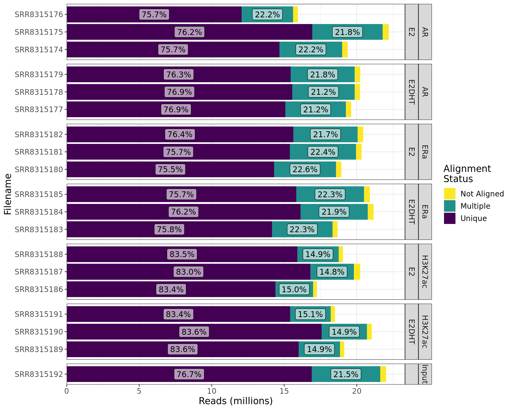

library(tidyverse)
library(glue)
library(yaml)
library(here)
library(reactable)
library(pander)
library(ngsReports)
library(scales)
library(htmltools)
myTheme <- theme(
plot.title = element_text(hjust = 0.5),
text = element_text(size = 13)
)
## This manages a bug which exists in Bioc 3.16 but is fixed in ngsReports 2.2.3
.parseLogs <- function(data, which = 1){
{
if (is.character(which))
which <- match.arg(which, c("metrics", "histogram", "all"))
if (is.numeric(which))
stopifnot(which %in% c(1, 2))
metrics <- lapply(data, function(x) {
cmd <- stringr::str_subset(x, "(INPUT|input)")
ip <- stringr::str_replace_all(cmd, ".+(input|INPUT)([ =]*)([^ ]+.bam).+",
"\\3")
ip <- str_replace_all(ip, "[\\[\\]]", "")
metHeader <- grep("METRICS CLASS\t.+.DuplicationMetrics",
x)
df <- ngsReports:::.splitByTab(x[seq(metHeader + 1, by = 1, length.out = 2)])
df$LIBRARY <- ip
df
})
metrics <- dplyr::bind_rows(metrics)
metrics$PERCENT_DUPLICATION <- as.numeric(metrics$PERCENT_DUPLICATION)
intCols <- setdiff(colnames(metrics), c("LIBRARY", "PERCENT_DUPLICATION"))
metrics[intCols] <- lapply(metrics[intCols], as.integer)
metrics <- as_tibble(metrics)
histData <- lapply(data, function(x) {
cmd <- stringr::str_subset(x, "(INPUT|input)")
ip <- stringr::str_replace_all(cmd, ".+(input|INPUT)([ =]*)([^ ]+.bam).+",
"\\3")
ip <- str_replace_all(ip, "[\\[\\]]", "")
histHeader <- grep("HISTOGRAM\tjava.lang.Double", x)
df <- NULL
if (length(histHeader)) {
x <- x[-seq_len(histHeader)]
x <- x[!grepl("^$", x)]
df <- ngsReports:::.splitByTab(x)
df$LIBRARY <- ip
df <- dplyr::select(df, "LIBRARY", everything())
}
df
})
histData <- dplyr::bind_rows(histData)
if (ncol(histData)) {
histData <- lapply(histData, function(x) {
any_na <- any(is.na(suppressWarnings(as.numeric(x))))
if (!any_na)
x <- as.numeric(x)
x
})
histData$BIN <- as.integer(histData$BIN)
histData <- as_tibble(histData)
}
out <- list(metrics = metrics, histogram = histData)
out <- lapply(out, function(x) {
colnames(x) <- stringr::str_replace_all(colnames(x),
"_", " ")
colnames(x) <- stringr::str_to_title(colnames(x))
x
})
if (which != "all")
out <- out[[which]]
out
}
}config <- read_yaml(here::here("config/config.yml"))
samples <- read_tsv(here::here(config$samples)) %>%
bind_rows(
tibble(
accession = unique(.$input), target = "Input"
)
)
bwt2_logs <- here::here("output", "bowtie2", glue("{samples$accession}.log")) %>%
setNames(samples$accession) %>%
.[file.exists(.)] %>%
importNgsLogs()
duplogs <- here::here("output", "markDuplicates", glue("{samples$accession}.metrics.txt")) %>%
setNames(samples$accession) %>%
.[file.exists(.)] %>%
sapply(readLines, simplify = FALSE) %>%
.parseLogs() %>%
mutate(
Filename = gsub(".sorted.+", "", basename(Library))
) %>%
dplyr::select(Filename, everything())
qc_path <- here::here(config$paths$qc, "raw")
fl <- file.path(qc_path, glue("{samples$accession}_fastqc.zip")) %>%
setNames(samples$accession)
rawFqc <- FastqcDataList(fl[file.exists(fl)])
names(rawFqc) <- names(fl)[file.exists(fl)]
samples <- readTotals(rawFqc) %>%
mutate(accession = str_remove_all(Filename, ".fastq.gz")) %>%
dplyr::select(accession, Total_Sequences) %>%
right_join(samples, by = "accession")This final QC worksheet summarises the alignments and de-duplication
metrics. Single-end alignments were performed using bowtie2
(Langmead and Salzberg 2012) before being
de-duplicated using markDuplicates from the Picard suite of
tools (https://broadinstitute.github.io/picard)
bwt2_logs %>%
mutate(Filename = str_remove_all(Filename, ".log")) %>%
dplyr::select(Filename, Unique_Unpaired, Multiple_Unpaired, Not_Aligned) %>%
pivot_longer(cols = contains("_"), names_to = "Status", values_to = "Reads") %>%
left_join(samples, by = c("Filename" = "accession")) %>%
mutate(
Status = Status %>%
str_remove_all("_Unpaired") %>%
str_replace_all("_", " ") %>%
factor() %>%
relevel(ref = "Unique"),
treatment = str_replace_na(treatment, "")
) %>%
arrange(Status) %>%
mutate(cumsum = cumsum(Reads), p = Reads / sum(Reads), .by = "Filename") %>%
mutate(y = cumsum - 0.5 * Reads) %>%
ggplot(aes(Filename, Reads, fill = fct_rev(Status))) +
geom_col() +
geom_label(
aes(Filename, y, label = percent(p, 0.1)),
data = . %>% dplyr::filter(p > 0.05),
fill = "white", alpha = 0.6, show.legend = FALSE
) +
facet_grid(target + treatment ~ ., scales = "free", space = "free") +
scale_y_continuous(
labels = comma_format(scale = 1e-6), expand = expansion(c(0, 0.05))
) +
scale_fill_viridis_d(direction = -1) +
labs(y = "Reads (millions)", fill = "Alignment\nStatus") +
theme_bw() +
myTheme +
coord_flip()
duplogs %>%
dplyr::select(
Filename, Alignments = `Unpaired Reads Examined` ,
Duplicates = `Unpaired Read Duplicates`, `Percent Duplication`
) %>%
left_join(samples, by = c("Filename" = "accession")) %>%
dplyr::select(-input) %>%
mutate(
Alignments = Alignments - Duplicates,
Discarded = Total_Sequences - Alignments - Duplicates
) %>%
dplyr::select(
Filename, Total_Sequences, Alignments, Discarded, Duplicates, everything()
) %>%
pivot_longer(
cols = all_of(c("Alignments", "Discarded", "Duplicates")),
names_to = "Status", values_to = "Reads"
) %>%
mutate(
Status = factor(Status, levels = c("Discarded", "Duplicates", "Alignments")),
treatment = str_replace_na(treatment, "")
) %>%
arrange(Filename, desc(Status)) %>%
mutate(
p = Reads / sum(Reads),
y = cumsum(Reads) - 0.5 * Reads,
.by = Filename
) %>%
ggplot(aes(Filename, Reads, fill = Status )) +
geom_col() +
geom_label(
aes(Filename, y, label = percent(p, 0.1)),
data = . %>% dplyr::filter(p > 0.033),
fill = "white", alpha = 0.7, size = 3.5
) +
facet_grid(target + treatment ~ ., scales = "free", space = "free") +
scale_y_continuous(
labels = comma_format(scale = 1e-6), expand = expansion(c(0, 0.05))
) +
scale_fill_viridis_d(direction = -1) +
labs(y = "Reads (millions)", fill = "Alignment\nStatus") +
theme_bw() +
myTheme +
coord_flip()Summary of the final alignments after trimming, filtering and deduplicating. Percentages are shown only if greater than 3.3% to avoid overlapping labels
div(
class = "table",
div(
class = "table-header",
htmltools::tags$caption(
htmltools::em(
"Alignment and de-duplication summary, with the number of reads in the
initial fastq files compared to the total number of retained alignments
after de-duplication."
)
)
),
duplogs %>%
dplyr::select(
Filename, Alignments = `Unpaired Reads Examined` ,
Duplicates = `Unpaired Read Duplicates`, `Percent Duplication`
) %>%
left_join(samples, by = c("Filename" = "accession")) %>%
dplyr::select(-input) %>%
mutate(
Alignments = Alignments - Duplicates,
`% Retained` = Alignments / Total_Sequences,
Discarded = Total_Sequences - Alignments - Duplicates
) %>%
dplyr::select(
Filename, Total_Sequences, Alignments, Discarded, Duplicates, `% Retained`,
everything()
) %>%
setNames(str_replace_all(names(.), "_", " ")) %>%
setNames(str_to_title(names(.))) %>%
reactable(
sortable = TRUE, filterable = TRUE, resizable = TRUE,
showPageSizeOptions = TRUE,
columns = list(
`Total Sequences` = colDef(
name = "Raw Reads", format = colFormat(separators = TRUE)
),
Discarded = colDef(format = colFormat(separators = TRUE)),
Alignments = colDef(format = colFormat(separators = TRUE)),
`% Retained` = colDef(format = colFormat(percent = TRUE, digits = 2)),
Duplicates = colDef(format = colFormat(separators = TRUE)),
`Percent Duplication` = colDef(
name = "% Duplication",
format = colFormat(percent = TRUE, digits = 2)
)
)
)
)R version 4.3.0 (2023-04-21)
Platform: x86_64-pc-linux-gnu (64-bit)
locale: LC_CTYPE=en_AU.UTF-8, LC_NUMERIC=C, LC_TIME=en_AU.UTF-8, LC_COLLATE=en_AU.UTF-8, LC_MONETARY=en_AU.UTF-8, LC_MESSAGES=en_AU.UTF-8, LC_PAPER=en_AU.UTF-8, LC_NAME=C, LC_ADDRESS=C, LC_TELEPHONE=C, LC_MEASUREMENT=en_AU.UTF-8 and LC_IDENTIFICATION=C
attached base packages: stats, graphics, grDevices, utils, datasets, methods and base
other attached packages: magrittr(v.2.0.3), DiagrammeR(v.1.0.10), Polychrome(v.1.5.1), htmltools(v.0.5.5), scales(v.1.2.1), ngsReports(v.2.3.3), patchwork(v.1.1.2), BiocGenerics(v.0.46.0), pander(v.0.6.5), reactable(v.0.4.4), here(v.1.0.1), yaml(v.2.3.7), glue(v.1.6.2), lubridate(v.1.9.2), forcats(v.1.0.0), stringr(v.1.5.0), dplyr(v.1.1.2), purrr(v.1.0.1), readr(v.2.1.4), tidyr(v.1.3.0), tibble(v.3.2.1), ggplot2(v.3.4.2) and tidyverse(v.2.0.0)
loaded via a namespace (and not attached): tidyselect(v.1.2.0), viridisLite(v.0.4.2), farver(v.2.1.1), Biostrings(v.2.68.1), bitops(v.1.0-7), fastmap(v.1.1.1), RCurl(v.1.98-1.12), lazyeval(v.0.2.2), digest(v.0.6.31), timechange(v.0.2.0), lifecycle(v.1.0.3), ellipsis(v.0.3.2), compiler(v.4.3.0), rlang(v.1.1.1), sass(v.0.4.6), tools(v.4.3.0), utf8(v.1.2.3), data.table(v.1.14.8), knitr(v.1.43), labeling(v.0.4.2), htmlwidgets(v.1.6.2), bit(v.4.0.5), scatterplot3d(v.0.3-44), RColorBrewer(v.1.1-3), plyr(v.1.8.8), withr(v.2.5.0), grid(v.4.3.0), stats4(v.4.3.0), fansi(v.1.0.4), colorspace(v.2.1-0), MASS(v.7.3-60), cli(v.3.6.1), rmarkdown(v.2.22), crayon(v.1.5.2), generics(v.0.1.3), rstudioapi(v.0.14), httr(v.1.4.6), reshape2(v.1.4.4), tzdb(v.0.4.0), visNetwork(v.2.1.2), cachem(v.1.0.8), zlibbioc(v.1.46.0), parallel(v.4.3.0), XVector(v.0.40.0), vctrs(v.0.6.2), jsonlite(v.1.8.4), IRanges(v.2.34.0), hms(v.1.1.3), S4Vectors(v.0.38.1), bit64(v.4.0.5), crosstalk(v.1.2.0), fontawesome(v.0.5.1), plotly(v.4.10.1), jquerylib(v.0.1.4), ggdendro(v.0.1.23), reactR(v.0.4.4), DT(v.0.28), stringi(v.1.7.12), gtable(v.0.3.3), GenomeInfoDb(v.1.36.0), munsell(v.0.5.0), pillar(v.1.9.0), GenomeInfoDbData(v.1.2.10), R6(v.2.5.1), rprojroot(v.2.0.3), vroom(v.1.6.3), evaluate(v.0.21), lattice(v.0.21-8), highr(v.0.10), bslib(v.0.4.2), Rcpp(v.1.0.10), xfun(v.0.39), zoo(v.1.8-12) and pkgconfig(v.2.0.3)